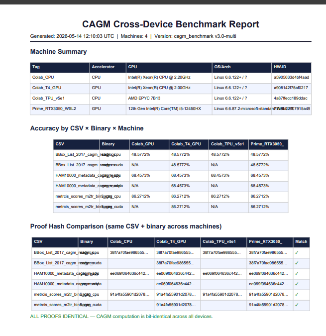

The Specifications
The architecture and math behind the canonicalization layer.
1. The Divergence Baseline
Everything else on this page is measured against this one number.
prove_divergence.py prints the host CPU model and Python version, runs a sorting-then-summing experiment, and reports the sorted-sum with its hex view.
Five environments produced three different sums, spread across 1.25390625. An Intel Xeon and an AMD EPYC agree; two Intel Xeons disagree. The vendor on the chip does not predict the answer.
The script does not isolate the cause. CPU instruction set, library build and interpreter version are all uncontrolled across these runs (Python 3.12.3, 3.13.7 and 3.13.16 appear). The script prints the Python version so you can compare like with like. Run it on your own fleet; that is the test that matters.
| Environment | CPU | Python | Sorted-sum | Hex view | Result |
|---|---|---|---|---|---|
| Prime (WSL2) | Intel i5-12450HX | 3.12.3 | 2190.0 | 00e00845 | B |
| OnlineGDB | Intel Xeon @ 2.80GHz | 3.13.7 | 2190.0 | 00e00845 | B |
| Colab CPU | Intel Xeon @ 2.00GHz | 3.13.16 | 2190.9140625 | a0ee0845 | A |
| Colab CPU | Intel Xeon @ 2.20GHz | 3.13.16 | 2191.25390625 | 10f40845 | C |
| Colab CPU | AMD EPYC 7B12 | 3.13.16 | 2191.25390625 | 10f40845 | C |
Reproduce it
# 1. Get the script (or download it from this page) git clone https://github.com/SwapnopamMitra/float-divergence-script.git cd float-divergence-script # 2. Run it python3 prove_divergence.py ============================================================ HARDWARE & MEMORY TELEMETRY ============================================================ CPU Model : AMD EPYC 7B12 Python : 3.13.16 ============================================================ Running Architecture-Sensitive Sorting Divergence Experiment... Sorted-Sum Result (Sum) : 2191.25390625 Sorted-Sum Hex View : 10f40845 ============================================================
2. SPCMP (Float32 Container & Canonicalization)
IEEE-754 binary32 values diverge across heterogeneous hardware due to NaN payloads, signed zeros, and FMA rounding differences. Measured below in the baseline.
SPCMP is a reversible float32 container format that enforces a deterministic total order.
- Canonicalization: All NaN payloads collapse to
0x7FC00000.-0.0collapses to+0.0. All other floats remain bit-exact. - Ordering: Bijective mapping to
uint32for unsigned comparison. - Compression: Order-0/1/2 predictive delta transform followed by Zstandard.
- Verification: Fail-closed SHA-256 Merkle root over the uncompressed predictive stream.
The 4 Commands
# 1. Sort and compress the original array ./spcmp sort input.bin # 2. Verify the Merkle commitment python3 verify.py input.sorted.pcmp --info # 3. Reconstruct the original array ./spcmp unsort input # 4. Compare for byte-for-byte lossless recovery cmp input.bin input.unsorted.bin
verify.py output
# filename.sorted.pcmp verifies one file; *.pcmp verifies every .pcmp file in the directory $ python3 verify.py model_weights_1m.sorted.pcmp --info === model_weights_1m.sorted.pcmp === file : model_weights_1m.sorted.pcmp valid : True error : None magic : PCMP version : 1 order : 2 n : 1000000 ordering_ok : True ordering_violation_index : None permutation_ok : True cvd_ok : True cvd_violation_index : None cvd_violation_reason : None meta_ok : True proof_type : 1 ordering_mode : 2 chunk_bytes : 4194304 total_n : 1000000 num_chunks : 1 stored_merkle_root : 306bbd79ae6cc9843015f59134e95963545d405bb88f788c1e8d1ab83eeda8ab computed_merkle_root : 306bbd79ae6cc9843015f59134e95963545d405bb88f788c1e8d1ab83eeda8ab merkle_match : True footer_magic : 0x50434d50 footer_version : 1
3. CAGM (Deterministic ML Training)
Standard ML training pipelines rely on floating-point math, meaning the exact same dataset and hyperparameters will produce different model weights depending on the GPU or CPU used.
CAGM is a fixed-point integer classifier (Q16.16) that completely removes floating-point arithmetic from the training loop.
- The Integrity Engine (IE): Canonicalizes logits at layer boundaries to ensure bit-exact hashes across compilers and hardware.
- Trajectory Proof: Emits a 64-character SHA-256 proof that binds the weights, gradients, activations, and epoch order into a single cryptographic commitment.
- Output Contract: Strict stdout output:
accuracy,proof, andie_verify.
$ ./cagm diabetes_cagm_ready.csv --hidden 64 --epochs 100 --batch 64 --lr 0.005 License OK — server check: PASS | uses remaining: 15 Loaded: diabetes_cagm_ready.csv rows=768 features=8 classes=2 Early stopping at epoch 29 (best=9, acc=0.8333) accuracy 0.785156 proof f8e66dd34cb782bf090211c6c63c0342999fe4f1cf5c8c55b54f532e8071c975 ie_verify PASS (hash=0x59E4A8B7)
Cross-Device Proof
| Machine | Proof hash (HAM10000_metadata · cagm_cpu, truncated) |
|---|---|
| Intel Xeon (CPU) | ee069f064636c442… |
| AMD EPYC (CPU) | ee069f064636c442… |
| NVIDIA T4 (GPU) | ee069f064636c442… |
| Google TPU (Host) | ee069f064636c442… |

4. Test Suites & Validation
- SPCMP: 42/42 adversarial assertions passed (NaNs, subnormals, extreme boundaries).
- CAGM: 41/41 verification assertions passed (determinism, overflow guards, adversarial data).
- CAGM vs Sklearn: Benchmarked against 6 standard ML models across 5 datasets, maintaining 100% deterministic proof matching.
Test Reports
Primary source documents. Not marketing copy.
| Source | Scope | Link |
|---|---|---|
| float-divergence-script | Sorted-sum experiment, 5 environments, 3 distinct results. Runs anywhere Python runs. | Repo · Script |
| x86-float32-output-divergence | Same binary, same input, 6 CPU nodes, 6 output hashes; GPU kernel-path findings on T4 and RTX 3050 | Repo |
| Report | Scope | Link |
|---|---|---|
| CAGM Verification Report 41/41 PASS | Determinism, IE canonicalisation, degenerate inputs, overflow guards | |
| CAGM vs sklearn | 6 sklearn baselines, 5 datasets, stratified k-fold CV, ctypes-native library | |
| CAGM Cross-Device Benchmark | Accuracy and proof-hash comparison, 4 machines, CPU/GPU/TPU -- all proofs identical |
| Report | Scope | Link |
|---|---|---|
| PCMP / SPCMP Verification Report 42/42 PASS | Every IEEE-754 edge case and degenerate array shape, checked against an independent Python oracle | |
| SPCMP Cross-Hardware Verification | Google CPU, TPU, GPU, and a native GPU node -- identical Merkle root and hash on all four | |
| Cross-Machine Determinism | 20 sort runs, 4 heterogeneous machines, 5 files each -- zero divergent hashes | |
| SPCMP Determinism Report | Top-k / bottom-k convergence; documents the honest scalar-reduction limit | |
| Aerospace Verification Proof | 40/40 assertions -- radiation bit-flip absorption, telemetry compression, GNC-loop determinism | |
| Scale Test Report | 32 runs, 100k to 1B float32 elements, 8 data patterns -- zero failures | |
| Samayuktam Sorting Benchmark | CPU/GPU sort timing vs NumPy quicksort/mergesort/stable, up to 4.5× speedup |